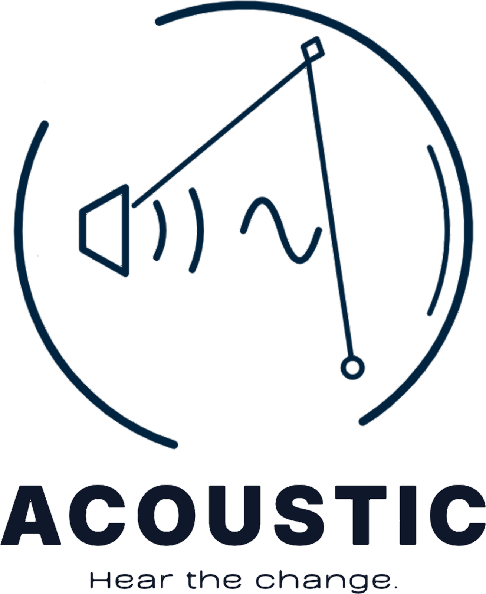

Steady masks, not noise machines
Choose coloured noise, rain, cafés, wind, fire and more. Everything is mixed the way you want it — volume, bass, hiss, balance — with your limit always in charge.
Android · Fully offline
Acoustic is a personal sound environment that makes noisy places feel calmer — steady noise, nature recordings, music and gentle tuning, shaped around your comfort. It lives entirely on your phone.

What it does
Acoustic plays soft, steady masking sound that helps busy rooms feel more comfortable. It is not cancellation, not a diagnosis, and not a black box — every control is yours.
Choose coloured noise, rain, cafés, wind, fire and more. Everything is mixed the way you want it — volume, bass, hiss, balance — with your limit always in charge.
Auto takes short microphone checks (about every 15 seconds) and gently reshapes your background inside your limits. It never records, never stores what it hears, and never raises your ceiling.
Fixed keeps your mix exactly as you set it. Continuous Auto-Adapt (an explicit opt-in) keeps shaping during a session you started — and stops completely with Stop, focus loss or a route change. No surprise restarts.
A finite master amplitude, peak guard and a ceiling you set. Reductions hold; only an explicit, fresh Louder re-opens more. Stop is always reachable — never behind a menu.
Like, Love or Not-for-me on what you hear. A fixed, on-device rule builds a personal picture of your taste — no listening history, no profile leaving your phone, no training on your ears.
Real CC0 recordings — rain, streams, forests, café hush — mixed with optional public-domain music (piano by default). Full credits and licenses live in the app.
An optional slow stereo drift on whatever is playing. Off by default, session-only, works on stereo headphones, harmless on mono. Not head tracking — just motion you can switch off any time.
Focus and wind-down routines, a lock-screen widget, a quick tile, saved comfort mixes and a one-tap Start. Tuned for the desk, the commute and the last hour before sleep.
Inside the app
A black-and-white interface that keeps the controls you need in reach — and everything else one layer down. These are unaltered captures from a connected phone.


A tiny taste
A small Web Audio sketch running entirely in your browser — white for brightness and air, pink for warmth, brown for depth. It is a friendly approximation, not the app’s native engine, and not a medical treatment.
Headphones or speakers at a comfortable level. Nothing is uploaded; generated here, discarded here.
Stopped
Private by design
Acoustic works without the internet, an account or a profile. The manifest ships with no INTERNET permission at all — the OS would refuse the network before we ever asked.
Good questions
With your permission, Auto takes brief microphone checks (about every 15 seconds) and reshapes the background layers inside your existing limit. It compensates for the room, not for your ears — keep Fixed if that sounds better. Auto is provisional, is not cancellation and does not guarantee you will hear any particular source less.
Yes. The app declares no INTERNET permission, and every sound — recordings, music, synthesis — is bundled or generated on-device. First launch may ask for microphone permission; that is for optional checks only and works fully offline too.
Yes. Audio plays from an explicit Start, screen-off keeps a session running, and Stop, media Pause, disconnects or focus loss end it safely. Recreation or force-stop never restarts capture.
Acoustic is in active development and is not yet on the Play Store. Engineering APKs are attached to GitHub releases on the project repository as they are cut, and the full source can be built with the pinned tools in the repo. See “Get the app” below.
The source is public on GitHub. While the project is pre-release, builds are provided as-is for evaluation; the final distribution model will be announced on this page when it is decided.
Pre-release builds live on the project repository. Watch the repo for engineering APKs and release notes as versions ship.